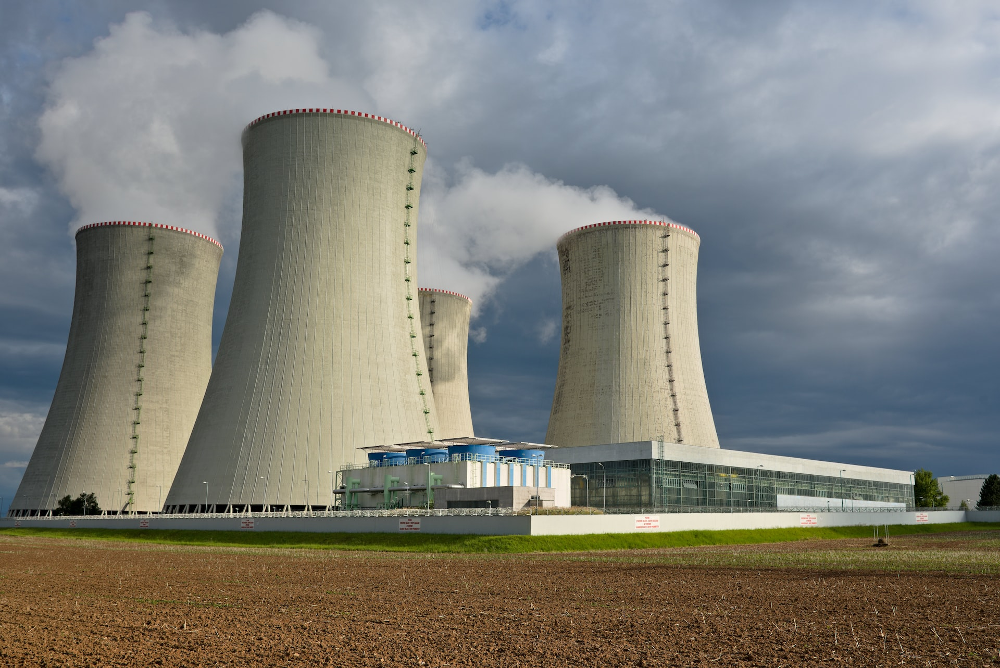
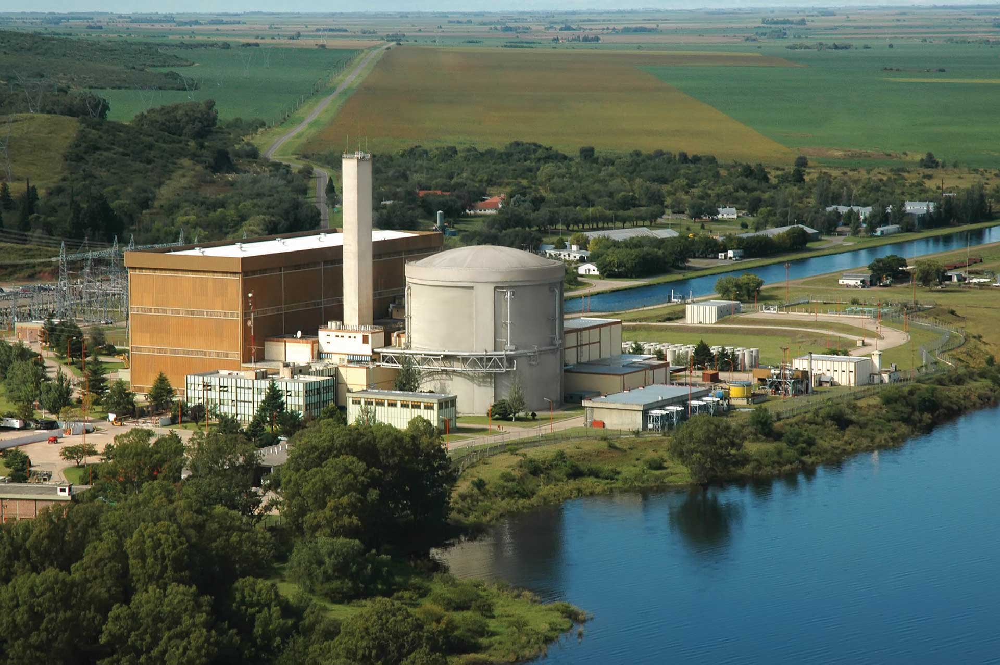

Energía Nuclear: Potencia para el Futuro
La energía nuclear es una de las principales fuentes de energía del mundo moderno, utilizada tanto para la generación de electricidad como para otros usos industriales.
Usos de la Energía Nuclear
La energía nuclear se usa principalmente para la generación de electricidad, pero también tiene aplicaciones en la medicina, la investigación científica y la producción de materiales avanzados.
Beneficios de la Energía
La energía nuclear es una fuente limpia y eficiente que reduce la emisión de gases de efecto invernadero, proporcionando una alternativa sostenible frente a los combustibles fósiles.
El Futuro de la Energía Nuclear
Con los avances en tecnología, la energía nuclear seguirá siendo una parte vital de la matriz energética mundial, asegurando un suministro constante y sostenible.
Central Montt
Ubicada en la parte La planta se encuentra sobre la margen derecha del Río Paraná, en la localidad de Lima, partido de Zárate y cuenta con una potencia de 745 Mwe.
- Tipo de reactor: Recipiente de presión
- Potencia Térmica: 2.175 MWt
- Potencia Eléctrica Bruta: 745 MWe
- Moderador y Refrigerante: Agua pesada (D20)
- Combustible: Uranio natural
Central Boreal
Construida en Argentina y tiene una potencia de 656 MWe. La planta está situada en la costa sur del embalse del Río Tercero en la provincia de Córdoba.
- Tipo de reactor: Recipiente de presión
- Potencia Térmica: 2.175 MWt
- Potencia Eléctrica Bruta: 745 MWe
- Moderador y Refrigerante: Agua pesada (D20)
- Combustible: Uranio natural